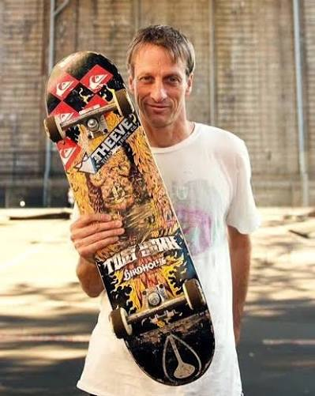
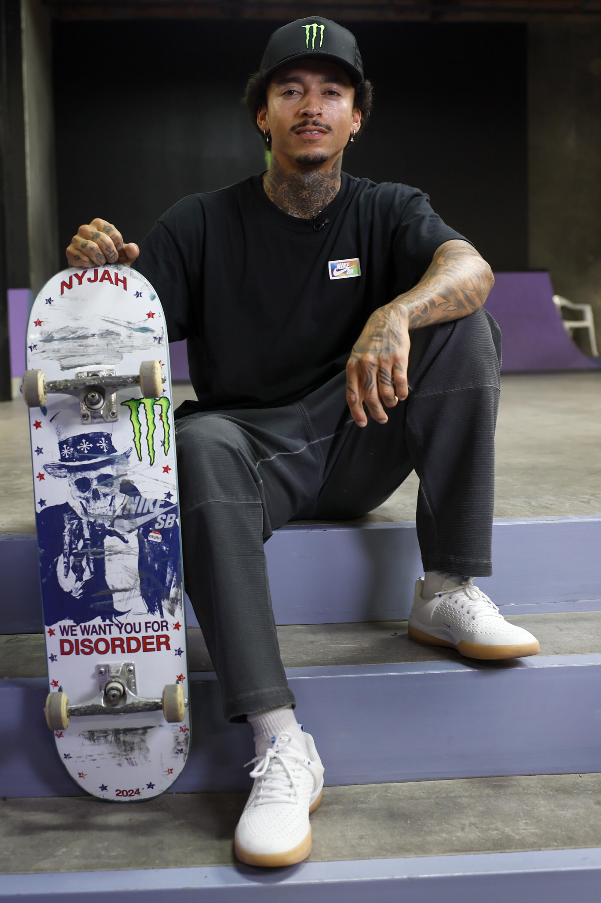

HALL DA FAMA
ÍCONES DO SKATE

Tony Hawk
Vertical
O rosto mais famoso do skate. Inventou dezenas de manobras aéreas e levou o esporte ao mainstream.

Rodney Mullen
Freestyle / Street
O 'padrinho do street'. Criador do flat ground ollie, kickflip, heelflip e impossible.

Rayssa Leal
Street
A Fadinha do Maranhão viralizou aos 7 anos e se tornou uma das maiores skatistas do mundo.

Bob Burnquist
Vertical / Mega Rampa
Pioneiro brasileiro do vert e da Mega Rampa, famoso por andar switch com estilo único.

Nyjah Huston
Street
Máquina de competição do street, dominou a Street League por mais de uma década.

Stacy Peralta
Dogtown
Membro dos Z-Boys, cofundador da Bones Brigade e diretor de documentários icônicos.

Letícia Bufoni
Street
Abriu caminho para as mulheres no street mundial, com atitude e muitos pódios.

Pedro Barros
Park / Bowl
Rei do bowl de Florianópolis, conhecido pela velocidade e aéreos gigantes.